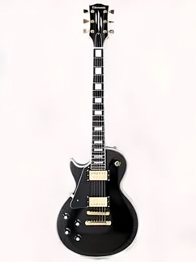

Guitarra Gibson Les Paul
$6.000.000
🎸 Gibson Les Paul — símbolo absoluto del rock clásico y moderno. Su cuerpo macizo y su tono profundo le otorgan una calidez inigualable. Está aquí porque representa el alma del escenario: autenticidad, fuerza y elegancia.
Envío en 24 h
123 compras
Desde Armenia 🚚
123 compras
Desde Armenia 🚚
⭐ 5.0 (💛💛💛💛💛)
Ver más